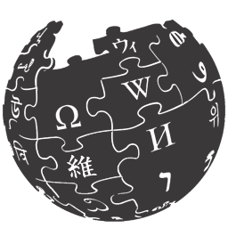

Linkedin
Github
Click Count:
0
Reset
Start

W
IKI-CLICKE
R
The Wikipedia Game
How to Use Wiki-Clicker
Search for any destination article. Then click Start. You can pull nodes to grow the tree. The goal is to bridge the gap between the nodes!